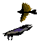
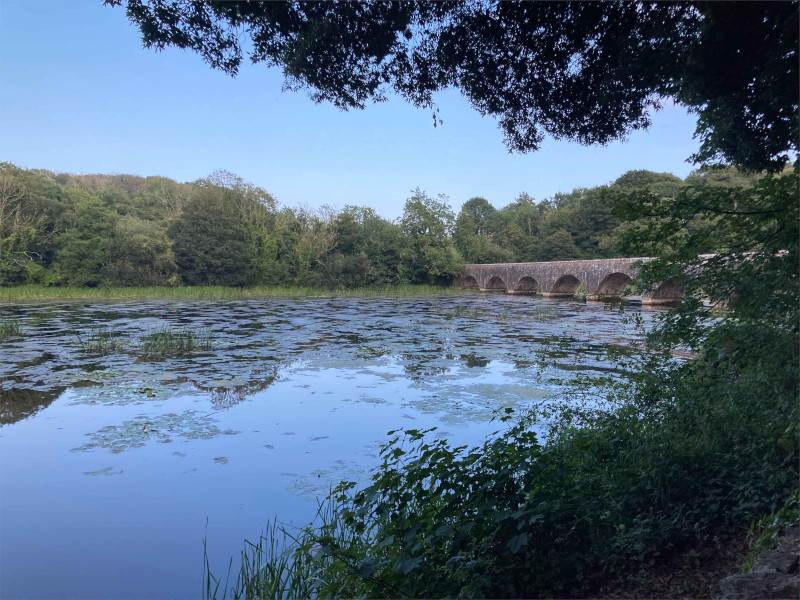
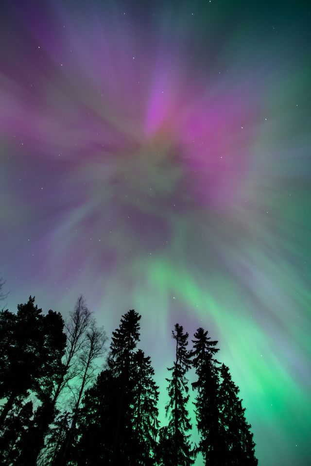
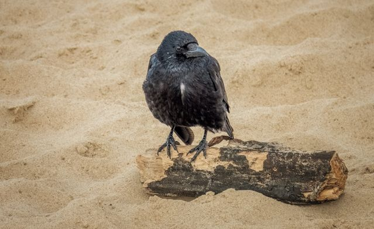
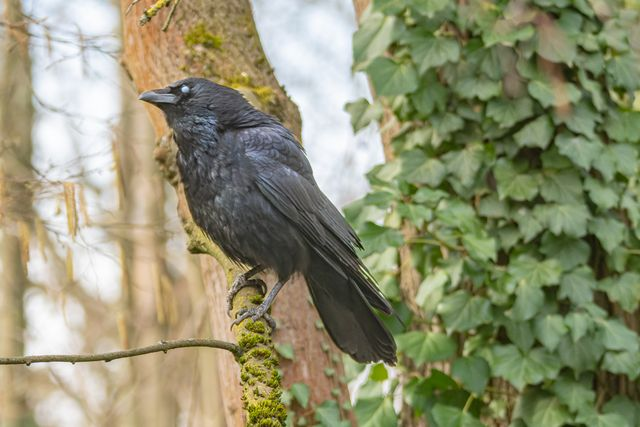
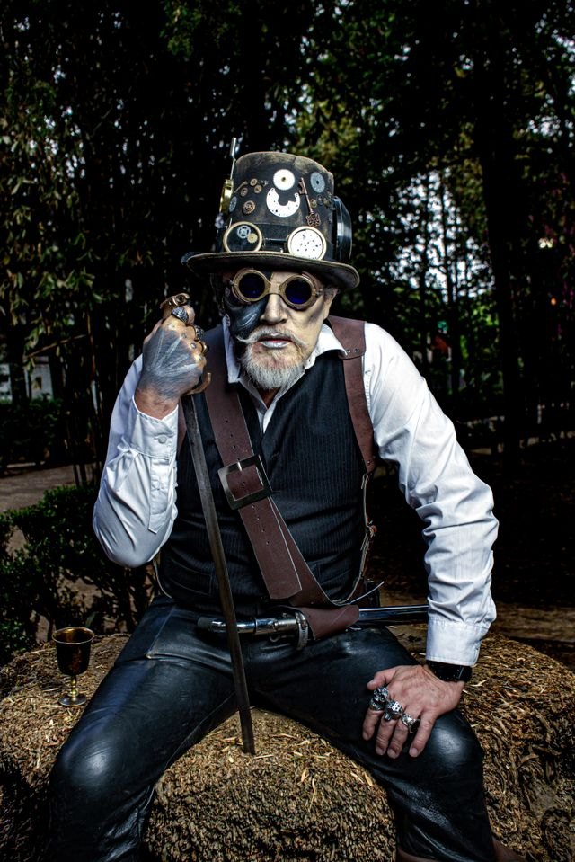

Join the mailing list for the latest information and gossip from Huginn and Muninn. We are the only talking ravens in the whole of Asgard and Midguard.





I am so glad that I get to guard the Bifröst and hear stories of Midguard second-hand from birds.
-Heimdall
Sign up for Midgarian Insights Newsletter!